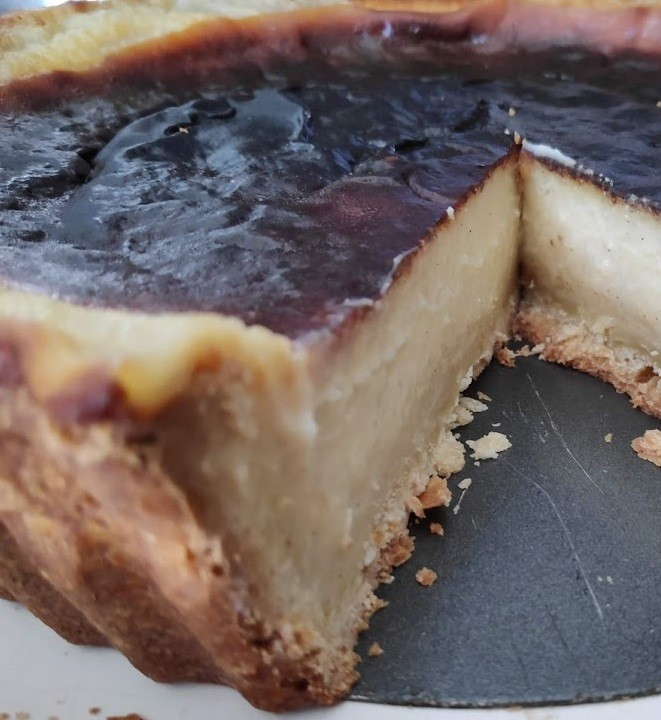
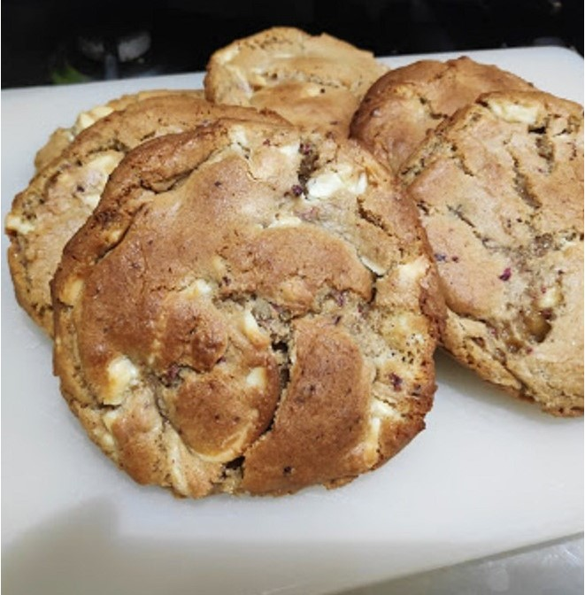

15/03/2021 - Perfect Lemon Meringue Pie
This recipe will get you an incredibly rich pie with a thick, crunchy topping of meringue. Making sure
the filling is fully cooled before topping with meringue will help mininise syrup from seeping out and
cooking it low and slow ensures the meringue cooks through with a good crust. If you find this much lemon a bit
too sour try swapping about 50-100ml of lemon juice with the same volume of fresh orange juice. Taking the time
to properly chill the pastry and cool the filling (plus cooling after removing from the oven) does make this a
long recipe, but i promise it's worth it!

15/03/2021 - Rich Parisian Flan
This recipe is surprisingly simple but delivers a delicious pile of set custard and pastry. The burned top can look strange but it gives the flan a unique taste.
Personally I enjoy a big slice of this for breakfast which is definitely not a healthy start to the day. Allowing the custard to set is crucial,
if you don't it will all spill out when you cut into it and something this big takes a long time to cool. It's basic physics.

16/03/2021 - Thick Raspberry & White Chocolate Cookies
This is an experimental recipe I have yet to try, based of of my experience with other recipes and online research. I expect the high temperature
to give a good crust with a gooey middle, and the bread flour to provide a nice chewiness. If you don't like a chewy cookie use plain flour
and 50% caster sugar instead. I'll be trying the cookies after an hour, a day, and three days to test any difference.